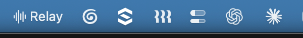

Follow the call, whatever language it's in.
Relay puts live subtitles on your screen, in your language, while the call is happening. It does the same for anything else playing on your Mac.
Relay reads whatever is coming out of your speakers, so it works in Zoom, Meet, Teams or anything else, with no bot joining the meeting. It tells voices apart, keeps up when the room changes language, and stays readable over full-screen video. Drag the subtitles wherever you want them.

The whole app
Relay sits in the menu bar. Pick the language you read in, press start, and that is all there is to it. There is a setting that streams the audio for translating if you would rather the words turned up while someone is still speaking.


What it costs
Nothing, if you bring your own key. Add an Anthropic or OpenAI key and Relay runs on your account, at cost, forever. Same app, every feature, no limits from us.
If you would rather not deal with keys, a hosted option is on the way: $2 a month plus what you use. Subtitles will be 40¢ an hour, so a forty-five minute call comes to about thirty cents, and Instant mode $3.50 an hour, because streaming the audio costs considerably more to run. There is nothing to sign up for yet; it will appear in the app when it is ready.
You would only ever be charged for time Relay spends listening. Stop it and the meter stops.